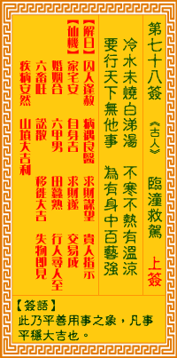

观音灵签第七十八签 【临潼救驾】 |
 | |||
冷水来浇白雪洋 不寒不热自温凉 要行天下无他事 惟有中藏一艺强 |
||||
| 【吉凶】 | 上中签 | 【宫位】 | 午宫 | |
| 【签语】 | 此卦平善用事之象，凡事平稳大吉也。 | |||
| 【解曰】 | 囚人逢赦 病遇良医 求财谋望 贵人指示 | |||
| 【仙机】 | 此签家宅安，自身吉，求财吉，交易成，婚姻合，六甲男，行人寻人至，田蚕熟，六畜旺，讼散，移徙大吉，失物即见，疾病安然，山坟 大吉利。 | |||
| 【详解】 | 犹如用冷水浇淋白雪，不冷也不热;欲走遍天下而无变故忧虑之法，唯有内含丰富且有余的本领罢了。 囚徒得赦，病遇良医，求财谋望，贵人指迷。此签平稳用事之象，凡事大吉利也。 本签即是平稳用事时。凡事大吉利者。亦即是冷水来浇时也。白雪洋。时令不寒不热时自有温凉者。逢此时令时。君尔行天下时。并无他事。唯君汝。必须藏有一 艺之长久。可行天下无阻。易言之。囚徒得赦病遇良医求财谋望贵人指迷。 此签有”人外有人”之意。提醒当事人，凡事谨言慎行。有时我们自以为什么都知道，尤其是对现状驾轻就熟的时候，很容易不自觉的自满或松懈下来，言行举止 也在不知不觉中变得傲慢无礼。但所谓”一山还有一山高”，须知天下之大，比我们见多识广的人一定多如牛毛、密如过江之鲫。因此切忌自以为是、咄咄逼人， 在自身状况良好的时候，也别忘了提醒自己：”强中仍有强中手”。勿过于松懈，仍应时刻充实自我，发现有不足的地方，就要想办法弥补。凡事谦冲忍让，莫逞 一时口舌之争。 | |||
| 【典故】 | 隋朝末年，天下纷争，李渊起兵太原，自称唐王。某日，李渊一家大小，经过临潼山，日方正午，突然杀出一队埋伏的人马，要取李渊等 性命，李渊顽抗，形势十分危险，这时秦琼（叔宝）在附近伍员庙中午睡，听到嘶杀声，赶来一看，见是李渊，即刻将敌人杀退，救了唐王。李渊后来为唐高祖，秦琼武艺高强， 有万夫不当之勇。《说唐》故事 | |||